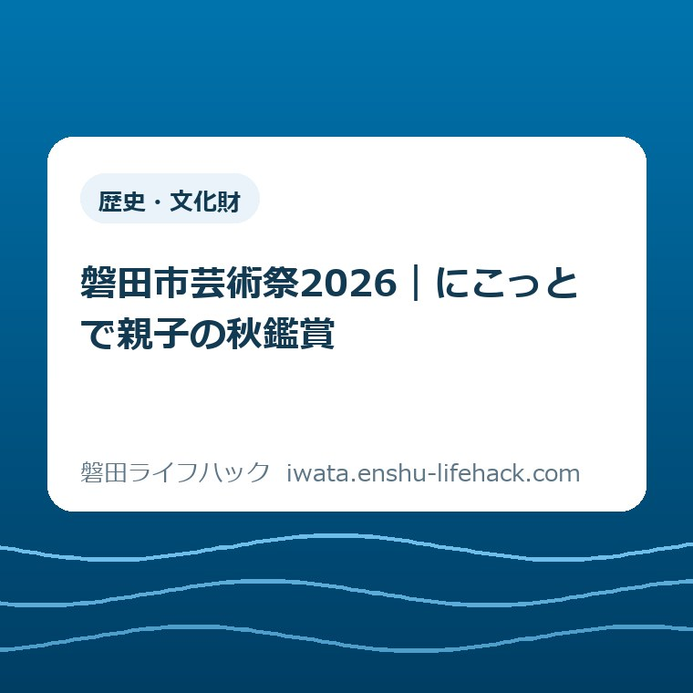

歴史・文化財
磐田市芸術祭2026｜にこっとで親子の秋鑑賞

この記事の要点
Q. 子どもと無料で作品を見るなら、いつにこっとへ行けばよい？
A. 磐田市芸術祭2026のジュニアアート展は10月17〜25日、ひと・ほんの庭にこっと2階で入場無料。19日・22日は休館です。展示は10時〜16時30分、25日は16時まで。短歌・俳句の部と同時開催です。家族で鑑賞日を一つ選び、出発前に市公式案内を確認してください。
外出の前から、保護者はもう働いている
子どもと文化展示に出かける日は、家を出るまでにも仕事があります。食事の時刻を考え、着替えを用意し、きょうだいの予定を合わせる。無料の催しでも、保護者が払う時間と手間は残ります。そこを抜きに「気軽に行ける」とは言いたくありません。
私は大石浩之（磐田市／不動産業）です。今回取り上げるのは、ひと・ほんの庭にこっとで開かれるジュニアアート展です。会場で見た感想ではなく、2026年10月14日に確認した市の公式案内をもとに、家族の予定へ移すための読み方を書きます。
施設の利用条件や支援制度の対象は、サービスと個別の事情で変わります。展示の入場が無料であることから、本の貸出や館内のすべての利用も同じ条件だとは判断できません。鑑賞の予定と、ほかのサービスの利用予定は分けて考えてください。
この記事で提案する今日の一歩は、家族で鑑賞日を一つ選ぶことです。工作の予習や感想を書く準備まで足さなくてよい。まずは「この日なら出られそう」を決める。そのために必要な開催日、休館日、終了時刻から順に見ていきます。
ジュニアアート展は10月17〜25日。休館日を先に外す
磐田市の「みんなのギャラリー展示のご案内」（2026年10月2日更新）では、2026磐田市芸術祭の短歌・俳句の部とジュニアアート展が、10月17日（土）から25日（日）まで同時開催とされています。期間中の19日（月）と22日（木）は休館です。
カレンダー上の期間は9日間ですが、休館の2日を除くと鑑賞候補は7日です。17日、18日、20日、21日、23日、24日、25日。この7日から家族の予定に合う日を探すと、休館日に支度を整えてしまう行き違いを避けやすくなります。
同じ市の案内で、公募展の時間は10時から16時30分、最終日は16時までです。ジュニアアート展を訪ねる際も、この掲載時間を目安にし、変更がないか出発前に確認します。25日だけは、ほかの開催日と終了時刻を同じにしないでください。
| 日付 | 予定へ移す内容 |
|---|---|
| 10月17日（土）・18日（日） | 10時〜16時30分 |
| 10月19日（月） | 休館 |
| 10月20日（火）・21日（水） | 10時〜16時30分 |
| 10月22日（木） | 休館 |
| 10月23日（金）・24日（土） | 10時〜16時30分 |
| 10月25日（日） | 最終日・10時〜16時 |
私は、午後の用事がある家庭ほど、終了時刻から逆に考えるのがよいと思います。「16時までなら15時台に着けば十分」とは限りません。駐車して移動する時間、トイレに寄る時間もあります。家ごとの移動時間を引いて、無理のない出発時刻を考えます。

会場はにこっと2階。建物の開館時間とは分けて読む
ジュニアアート展の会場は、ひと・ほんの庭にこっと2階の「みんなのギャラリー」です。市の展示案内では入場無料、主催は磐田市・磐田市文化協会とされています。会場の住所は、市の施設ガイドで磐田市上新屋304と確認できます。
にこっとの施設ガイドに載る建物の開館時間は9時30分〜18時です。一方、芸術祭の展示時間は10時からです。にこっとへ入れる時刻と、作品を見られる時刻は別。この30分の違いは、朝に予定を組む家庭が押さえておきたい事実です。
夕方にも同じ区別があります。建物が18時まで開いていることは、展示も18時まで見られるという意味ではありません。本を読む予定と鑑賞を組み合わせるなら、先に展示の終了時刻を予定表へ書く。帰りに回そうとして見逃すことを防ぐための、私の提案です。
市の施設ガイドには、一般駐車場、車いす対応のエレベーター、授乳室、おむつ交換台などの設備が示されています。子ども連れで訪ねる際の判断材料になります。ただし、当日の駐車場の空きや設備の使用状況まで保証する情報ではありません。
ベビーカーで2階へ向かう動線や、家族に必要な設備の場所が気になる場合は、施設へ確認しておくと予定を立てやすくなります。「設備がある」と「到着したら待たずに使える」は別の話です。本記事では、当日の混雑や移動にかかる分数は断定しません。
本の貸出も合わせたい家庭は、磐田市の図書館6施設と近い館の使い分けも参考になります。市の施設ガイドでは、本を借りるには利用者登録が必要とされています。作品を見る予定に貸出を足すかは、家族の余力で決めてかまいません。
地域の子どもの作品を、採点せずに見に行く
2026磐田市芸術祭では、ジュニアアート展と短歌・俳句の部が同じ期間に開催されます。子どもの作品を訪ねる日に、言葉による表現にも触れられる組み合わせです。作品の出品点数、参加校、個々の作品名は、確認した市の案内では確定できませんでした。
私は、地域の子どもの作品を見る外出を、子どもに正しい感想を言わせる場にしなくてよいと思います。「上手だった？」と答えを求めるより、足が止まった作品があれば一緒に眺める。何も言わなければ、そのまま見る。そのくらいの余白がある鑑賞を提案します。
声をかけるなら、「どの色が気になった？」や「もう一度見たいところはある？」など、本人が見たものへ戻れる問いが考えられます。これは私の提案で、主催者が指定する鑑賞方法ではありません。作品について知らないことを、保護者が無理に解説する必要もないと考えます。
きょうだいで関心が違うことも、予定を決めるときに織り込んでよいと思います。一人は長く見たい、一人は別のことをしたい。その違いを、鑑賞が成功したか失敗したかに結びつけない。付き添う大人の人数や動ける範囲に合わせ、見終える区切りを相談します。
作品の撮影可否は、今回確認した展示案内からは判断できません。撮影する前に会場の掲示や係の方へ確認してください。撮影できる場合でも、作品の名札やほかの来場者が写ることがあります。家族の記録を、そのまま公開してよいとは考えないほうがよいでしょう。
帰宅後に何か残したいなら、好きだった色や形を一つ話すだけでもよい。磐田市の電子図書館と紙の本を比べる記事のように、家で過ごす時間へつなぐ入口もあります。ただし、鑑賞の後に読書や制作まで必ず続ける、という宿題にはしません。
良い点——無料と同時開催が、出かけ方の幅を残す
ジュニアアート展の良い点は、入場無料で、短歌・俳句の部と同じ日程に開かれることだと私は考えます。費用の見通しと、同じ会場で何を見られるかが分かると、家族が予定を相談しやすくなります。芸術祭全体を回る計画を立てなくても、一つの会期を選べます。
入場料がかからないことは、人数分の券代を先に計算しなくてよいという実利があります。移動や飲食に使う費用までゼロになるわけではありませんが、展示そのものの料金は明確です。私は「無料」を、家族の家計に関わる条件としてきちんと評価したいと思います。
もう一つは、にこっとという本や子育て支援の機能を持つ施設が会場である点です。市の施設ガイドで場所や設備を調べられるので、展示の案内と照らし合わせて準備できます。初めての家族にも、行き慣れた家族にも、確認する入口が用意されています。
みんなのギャラリーは、市の利用案内によると2026年4月19日ににこっと2階へ開設された展示室です。本を利用する場所としてにこっとを覚えていた人には、同じ建物に展示を見る行き先が加わったことになります。以前の館内の記憶だけで場所を決めないためにも、2階という情報を添えておきます。
作品を出す側がいることも忘れたくありません。展示には、制作する時間と、作品を人に見てもらうための準備があります。具体的な運営の分担は未確認ですが、鑑賞する側としては、会場の掲示に従い、作品を大切に見る。私は、その基本で地域の催しに参加できると考えます。
注文したい点——家族の段取りに必要な情報を近くに
ジュニアアート展の案内で注文したい点は、展示時間と施設の開館時間の違いを、家族が一度で見比べられると助かる、ということです。市の展示案内には会期と休館日が明記されています。その良さを認めたうえで、外出する側としての要望を一つ添えます。
親子の予定表に必要なのは、行ける日、作品を見られる時刻、会場の階です。施設ガイドへ移ると開館時間が目に入るため、展示の時間と置き換えて覚えてしまう心配があります。「施設は9時30分から、展示は10時から」と並んでいれば、読み直しの手間を減らせると私は思います。
私は、無料でも、親の段取りは無料にならないと考えます。料金の案内だけで外出の負担を語り終えないでほしい。休館日を照合し、昼寝や食事に合わせて動き、帰宅後の用事も引き受ける。その手間があるからこそ、日付と時間を迷わず拾える表示には価値があります。
未確認の条件を都合よく補うことはしません。予約の扱い、撮影のルール、当日の混雑、展示の具体的な作品構成は、確認した案内だけでは分からない部分です。家族の参加を左右する項目があれば、該当する点を主催者や施設に確認してください。
問い合わせ先も内容で分けると伝わりやすくなります。展示の内容や開催案内については市の文化振興課、建物の設備や施設利用についてはにこっとの施設ガイドが入口です。私は、質問したいことを一文にしてから連絡すると、別の窓口の話と混ざりにくいと考えます。
対案・結論——今日決めるのは、鑑賞日を一つだけ
ジュニアアート展を家族の予定に入れるために、今日行うことは鑑賞候補日を一つ選ぶことです。17日、18日、20日、21日、23日、24日、25日から、食事やほかの用事とぶつかりにくい日を相談します。実際に出かける判断は、当日の体調も踏まえてかまいません。
予定を共有する文は、短くても必要な条件を残せます。例えば「10月24日、にこっと2階で作品を見る。展示は10時〜16時30分。出発前に公式案内を確認」。これは記入例です。24日に来場を勧める趣旨ではなく、各家庭で選んだ日に置き換えてください。
家族の誰かが後から予定を見たときも、施設名だけで終わらないようにします。「にこっとへ行く」だけだと、本を借りる日なのか、展示を見る日なのかが伝わりません。目的と階、展示時間があれば、付き添いを交代する場合にも話が通じやすくなります。
持ち物は、ふだんの外出で必要なものを基本にします。この記事のために特別な鑑賞道具や教材を買い足す提案はしません。会場に持ち込めるものや利用ルールは、その場の掲示に従ってください。鑑賞の準備が、新たな買い物や荷物の負担にならない形を私は選びます。
当日は全部を見ることを達成条件にしなくてよいと思います。短く切り上げる選択も、家族の状態に合わせた段取りです。展示を見られなかった場合まで、保護者の準備不足に結びつける必要はありません。候補日を選べたこと自体が、外出の判断材料を一つ増やしています。

別の日の学びや文化の予定まで探したくなったら、磐田市の「学びの庭」10月号と冬の講座情報もあります。今回の鑑賞と、講座の申し込みは別の予定です。行き先を増やすためではなく、必要になったときの情報の入口として置いておきます。
大石の視点——短い鑑賞にも、家族が動いた価値がある
私は、子どもと地域の作品を見る時間は、長さだけで測らなくてよいと考えます。これは鑑賞体験の報告ではなく、段取りを重視する私の意見です。移動と支度を引き受けた家族が、帰り道まで無理なく過ごせるなら、短い立ち寄りにも十分な意味があります。
私にも迷いはあります。展示だけを目当てに時間を空けるか、本を借りる用事と重ねるか。準備を減らすなら用事をまとめたい一方で、予定を詰めると子どものペースを待てなくなることも考えられます。だから一律に「ついでが得」とは言い切りません。
その迷いに対する私の答えは、目的を一つ先に決めることです。今回はジュニアアート展を見る日、として予定を組む。本の貸出を足すかどうかは余力で決める。無料の文化展示を、保護者の働きを増やす予定に変えない。この線ははっきり引いておきたいと思います。
2026年10月14日時点では、開催前の案内です。作品を見た感想や現地の混雑を想像で付け足さず、今分かる条件で一日を選ぶ。最後は磐田市の公式ページで開催日・休館日・展示時間を確かめてから出発してください。
FAQ——親子で訪ねる前の3つの確認
ジュニアアート展はいつ、何時まで見られますか？
2026年10月17〜25日の開催で、19日・22日は休館です。市の展示案内では公募展は10時〜16時30分、最終日は16時までとされています。25日に訪ねる場合は終了が30分早い点に注意してください。施設自体の開館時間とは異なるため、出発前に市公式の展示案内を再確認してください。
会場はどこですか。入場料はかかりますか？
ひと・ほんの庭にこっと2階の「みんなのギャラリー」で、入場は無料です。住所は磐田市上新屋304です。短歌・俳句の部と同時開催で、主催は磐田市・磐田市文化協会です。無料なのは展示の入場料であり、交通費やほかのサービスの利用条件まで同じという意味ではありません。
小さな子ども連れでは、何を確認すればよいですか？
まず家族で鑑賞日を一つ選び、休館日と展示時間を確認してください。市の施設ガイドにはエレベーター、授乳室、おむつ交換台などの設備が示されています。当日の使用状況や駐車場の空きは保証されません。必要な移動動線や撮影の可否は、施設や会場の案内で確認してください。
参考にした公式情報
- みんなのギャラリー展示のご案内（2026年10月2日更新）／磐田市（2026年10月14日確認）
- 施設ガイド ひと・ほんの庭 にこっと（2026年8月7日更新）／磐田市（2026年10月14日確認）
- みんなのギャラリーの利用（2026年4月17日更新）／磐田市（2026年10月14日確認）
本記事は磐田市公式サイトではありません。開催内容・日程・利用条件は変更されることがあります。個別の利用条件は主催者・施設へ、制度の対象は市の担当窓口へ確認してください。最後は必ず磐田市公式ページの最新案内をご確認ください。